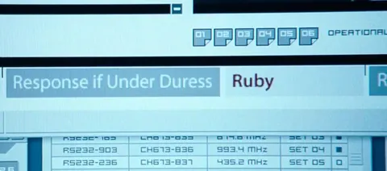

Вообще умение строить аналогии и приземлять метафоры на любую предметную плоскость - полезный навык. Потому что в самых разных индустриях есть лучшие практики, которые, при должном умении переложить на свою тематику, можно переиспользовать. Приведу пару фановых примеров из текущего проекта.
Представьте себе что вам нужно телефоном отсканировать куар-код с этого же самого телефона. Что для этого потребуется? Например, зеркало. Но в качестве виртуального зеркала можно использовать второй телефон, который "отразит" изображение по какому-то другому протоколу, например - BLE. Получаем техническую концепцию "BLE-зеркала", которую можно использовать для весьма разных задач обмена информацией.
Или вот еще задачка. Есть три стороны взаимодействия - источник правды (бекенд) и два девайса: потенциально скомпрометированная сторона (назовем ее "агент") и сторона-арбитр, которой нужно принять решение без доверия агенту. На ум приходят старые добрые фильмы про шпионов. Взять того же Борна - помните сцены, где оперативник должен назвать одно из кодовых слов - "ответ в нормальной обстановке" и "ответ под принуждением"? Так и поступим - бекенд генерит два токена, заранее передает их арбитру, а в момент "контакта" сообщает агенту один из токенов, который тот транслирует арбитру. Агент не знает, какой токен он транслирует, а значит - не может сфальсифицировать нужный сигнал. Арбитр знает, какую резолюцию выбрать в зависимости от полученного токена и уверен, что агент не мог его обмануть. Профит.
В общем, фантазия (даже больная) - штука хорошая. Будем развивать.
